Complete guide — from double-click to your first auto-published post. v1.15.6 · Version française
Never touched an editing tool? Good — this guide is written for you. Deepotus Video Gen turns an idea into a post-ready vertical video, with no software to learn. Everything runs on your computer; you plug in your own API keys (you pay your providers, not the app).
Five ways to make a video, from simplest to richest:
① a still image animated into a cinematic clip (Seedance) · ② an avatar that speaks your script (HeyGen) · ③ your own footage shot on a phone (UGC) · ④ a composition mixing several sources (Templates or Studio) · ⑤ a whole narrated novel chapter turned into an illustrated video (Episodes). Add voiceover and background music on top, then the Scheduler plans and publishes on its own.
Double-click the Deepotus Video Gen icon on the Desktop. The app starts silently (no black window), then your browser opens on the studio. On first launch a 5-step wizard guides you: persona, providers, channels. Replay it anytime (command palette ⌘K → "Replay onboarding").
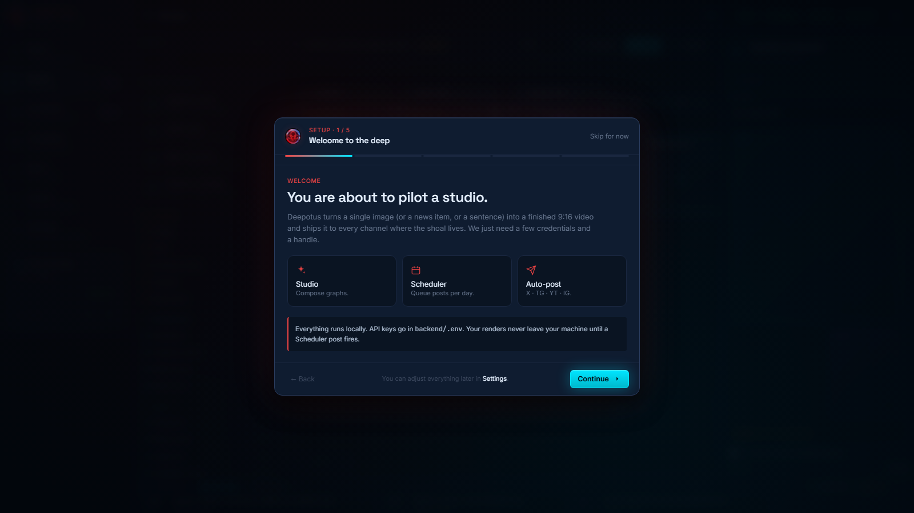
The first-run wizard. The "Generators" step lists your providers, including the Ollama (local LLM) option.
fal.ai/dashboard/keys.fal / heygen / voice) turn green when a key is active.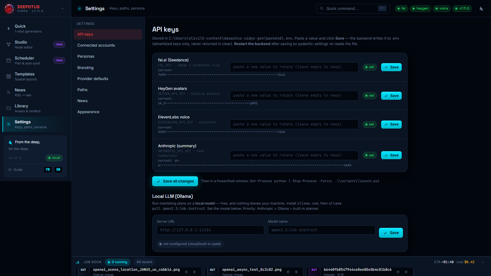
Settings → API keys: each key has a field, a status and a Save button. At the bottom, the Local LLM (Ollama) card (chapter 11).
| Action | Service | Indicative cost |
|---|---|---|
| Create an image | fal.ai (FLUX) | ≈ $0.003 |
| 10 s cinematic clip | fal.ai (Seedance) | ≈ $0.30–0.60 |
| 1 min talking avatar | HeyGen | ≈ 6 credits |
| Voiceover / narration | ElevenLabs | ≈ per characters · free tier available |
| Upload your own video / sound | — | free |
| News summary / marketing plan | Anthropic / OpenAI / Gemini / Ollama | ≈ $0.01 / free (Ollama) |
| Publish to Telegram / X | — | free / your X credits |
| API key | Required? | What it unlocks |
|---|---|---|
| fal.ai | Required | Images (FLUX) and video clips (Seedance) — the only key you need to start. |
| HeyGen | Optional | Talking avatars (video type ②) and avatar + clip compositions. |
| ElevenLabs | Optional | Voiceover / narration — for your UGC videos and the Episodes feature (chapter 7), saved straight to the audio Library. |
| Anthropic, OpenAI or Gemini (any one is enough) | Optional | News summaries, marketing plans and genuinely AI-written scripts (News, Studio & Episode storyboards). Without a key: deterministic brand-template version. |
| Ollama (local LLM) | Optional | Same AI uses as above, 100% local and free (chapter 11). |
| X (4 keys) | Optional | Auto-publishing to X/Twitter (chapter 12). |
| Telegram (bot token) | Optional | Auto-publishing to a Telegram channel. |
Tip: start with fal.ai alone, then add keys as you explore avatars, voiceover, AI and publishing.
%LOCALAPPDATA%\DeepotusVideoGenData) — they survive updates and reinstalls.The persona is your brand voice: it feeds marketing plans, avatar scripts and the prompt generator. Go to Settings → Personas.
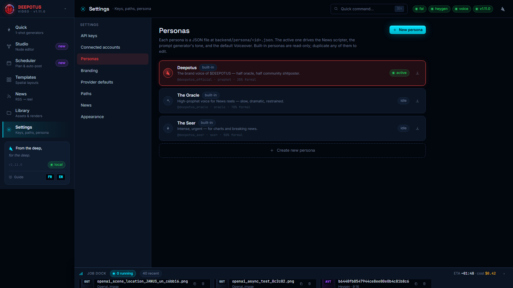
Settings → Personas: create, edit and activate your brand voice.
Library tab: your library of images, video renders, sounds and captions. Everything lands here.
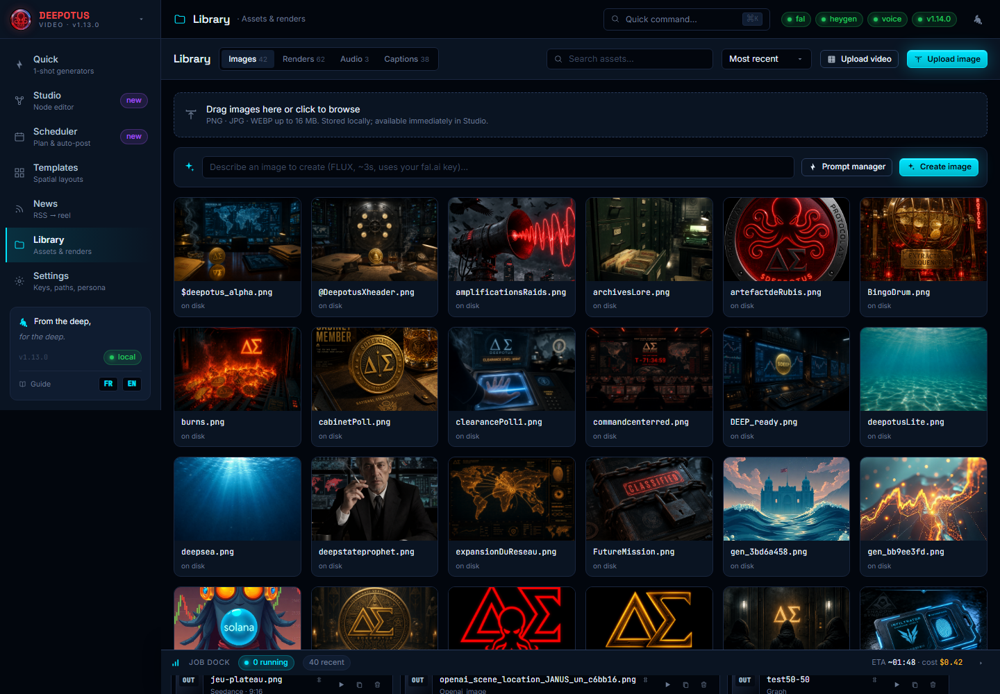
Library: create an image (FLUX), the Prompt manager, Upload image and Upload video (your own clip). Hover a render to play it.
Quick tab, Seedance mode: one image + a prompt = a vertical cinematic clip.
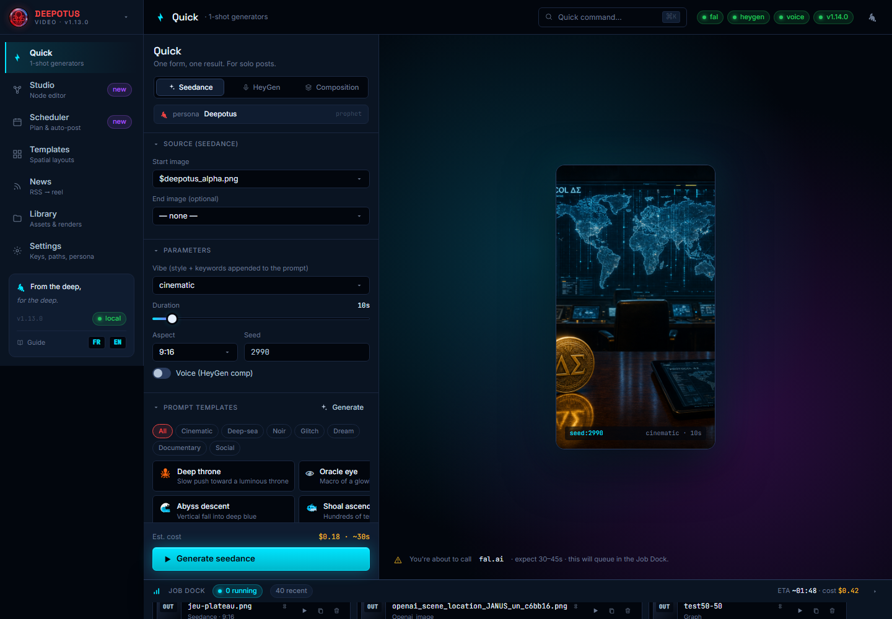
Quick / Seedance: sources on the left, real-format preview on the right, estimated cost before you launch.
Still in Quick, HeyGen mode: a script read by an avatar.
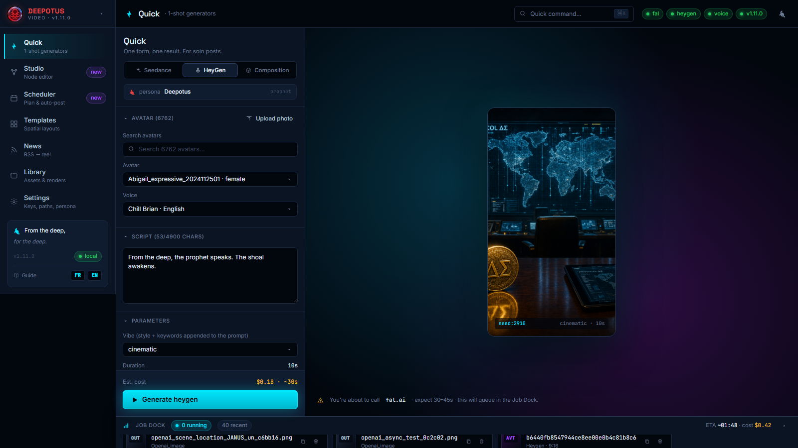
Quick / HeyGen: avatar + voice selection, upload your photo for a custom avatar, script.
HeyGen gives you a very large catalogue — often 1,000+ avatars and 2,000 voices. The very first time the app requests this list, HeyGen's server can take up to a minute to respond. This is HeyGen's own service being slow — not an app bug, not a key problem, and not a network or antivirus issue.
So you don't have to wait, the app pre-loads the list in the background at startup: by the time you reach the HeyGen tab, the avatars are usually already there. Once fetched, the list is cached — every later open is instant.
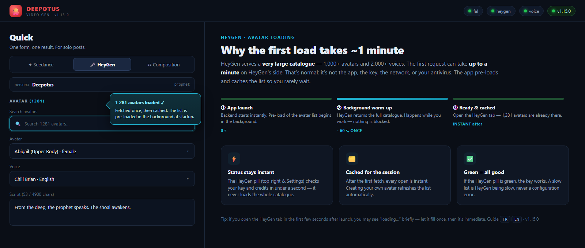
Left: the HeyGen tab once loaded (1,281 avatars, search field, avatar & voice selectors). Right: why the first load takes ~1 min — pre-loaded at startup, then instant.
Composition mode combines both: a Seedance clip + a HeyGen avatar in one video (sequential or split-screen). Anti-cut is automatic: the avatar always finishes its sentence.
Many creators film themselves on a phone — a selfie, a reaction, an unboxing. Deepotus welcomes these raw clips (UGC, user-generated content) and marries them to your animations.
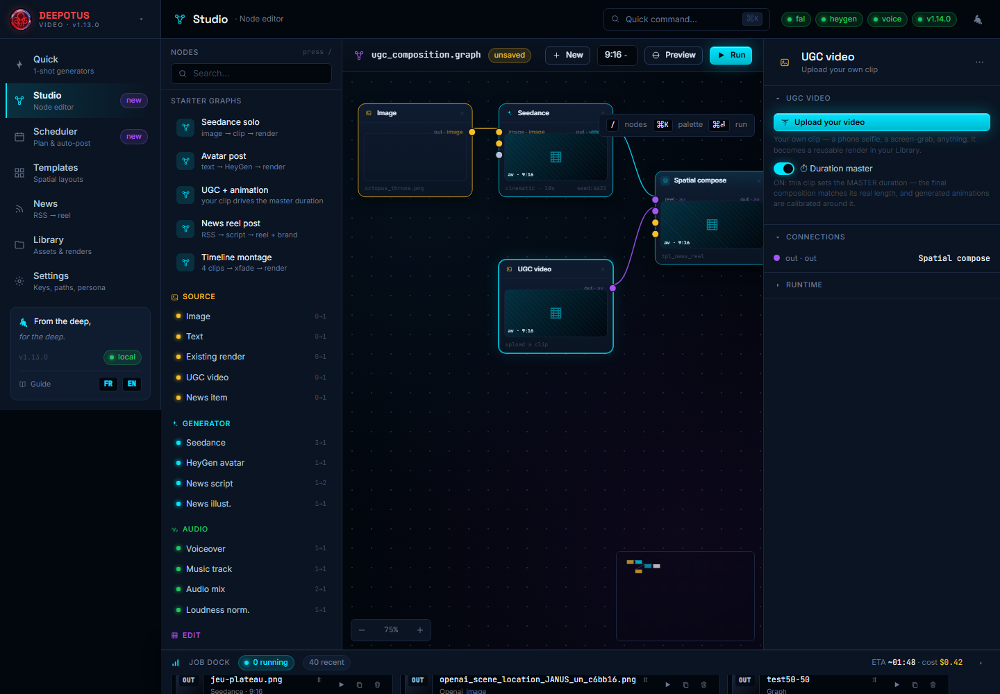
Studio: the "UGC + animation" starter. On the right, the UGC video node with the ⏱ Duration master switch.
When you turn on ⏱ Duration master on your clip, its real length drives the final video. Generated animations (Seedance) are then calibrated around your clip — no more guessing "how many seconds?". You talk for 12 seconds to camera → the composition is 12 seconds, your illustration animation follows. It's the equivalent, for your own footage, of the avatar anti-cut.
Sound makes a video. Deepotus now has a full audio side: import your own sounds, turn a script into a voiceover, and lay a background music track under any render.
The Library has an Audio tab next to Images and Renders. It gathers every sound: imported files, generated voiceovers and music tracks.
.mp3 / .wav / .m4a (and more). Its duration is measured; it appears in the Audio tab, playable inline, reusable everywhere.Turn text into a natural narration with your ElevenLabs key.
Drop a music bed under your video — the app mixes it for you.
You have a story to tell — a chapter, a lore drop, a serialised novel. The Episodes page turns a block of text into a narrated, illustrated vertical video, scene by scene, ready for the Scheduler. Open it from the sidebar (Episodes). A clickable stepper walks you through four steps.
.txt, .docx or .pdf — the text is extracted for you.A video needs shots. The app cuts your chapter into scenes, each one a bit of text + its own illustration.
Templates tab: ready-made 9:16 layouts (news reel + avatar + brand strip, split-screen, PIP corner, triptych…). Each thumbnail reflects its real region layout — they're all different.
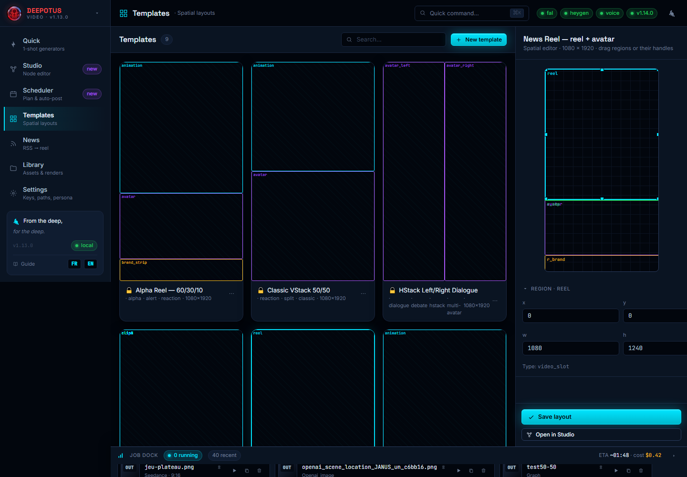
Templates: gallery of layouts (distinct thumbnails), spatial editor on the right (drag regions or their handles).
The Studio is the advanced workshop: you wire nodes (sources → generators → montage → render) like a visual recipe. Don't worry — always start from a ready-made starter graph.
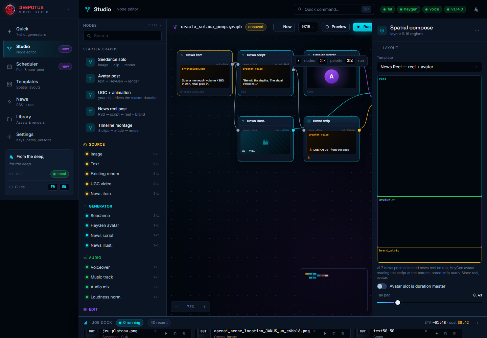
Studio: the node palette on the left, the canvas in the middle, the inspector on the right. Top bar: New, Preview, Run.
Scheduler tab: the publishing calendar, and the heart of "human-in-the-loop" — nothing goes out without your approval (unless you decide otherwise).
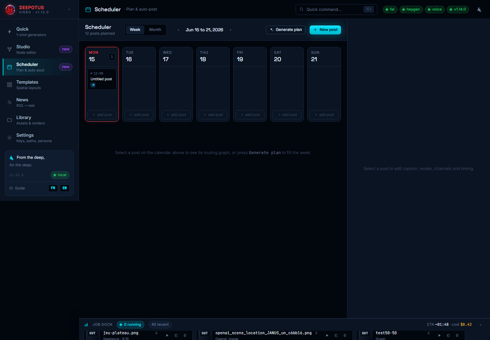
Scheduler: week/month, AI plan, document import, the post's graph + inspector on the right.
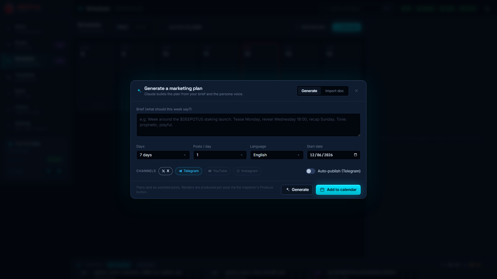
"Generate plan": a one-sentence brief becomes a full plan, reviewed by you (human-in-the-loop).
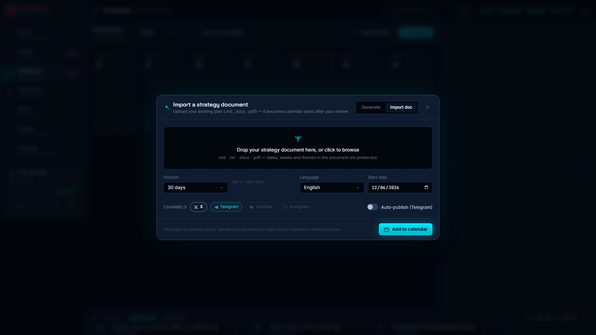
"Import doc": your strategy document becomes calendar posts.
Select a post: the right inspector opens the post's whole workshop. Produce button: the app builds the image (FLUX) then the clip (Seedance) from the plan's ideas — or reuses the source you chose. A thumbnail of the render appears on the post-graph's Render node, and a video preview shows in the inspector: you see the result before clicking Send or enabling Auto.
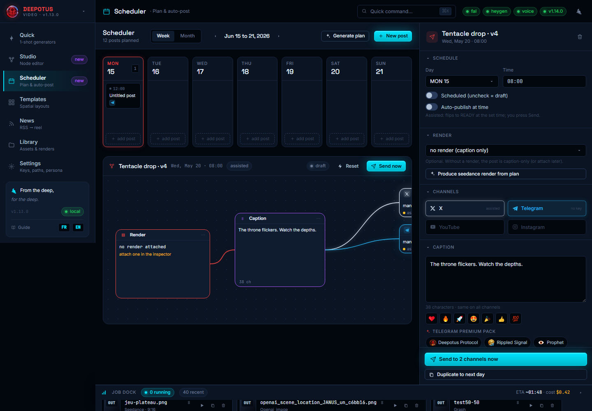
A post's inspector: channels, caption, and the emoji bar + the Telegram Premium pack (branded one-tap tags) — plus the render preview before publishing.
Under the caption, two one-tap rows, ideal for Telegram and X:
Each post has a mode. Assisted (default): at the set time, the post flips to READY — you click Send. Auto: it goes out by itself on connected channels (Telegram, X). Status by color: gray = draft, cyan = scheduled, amber = ready, green = posted, red = failed.
Several features call a language model: news summaries (News), marketing plan generation (Scheduler) and Episode storyboards (the "By AI" split). As of v1.15, you choose the provider for each.
Paste whichever key(s) you want in Settings → API keys: Anthropic (Claude), OpenAI (GPT) and/or Google Gemini. Just one is enough to enable summaries and AI plans; add several if you want to switch between them.
Plans can also run on an AI model installed on your machine: it's free and your strategy never leaves your computer.
ollama.com (Windows).ollama pull qwen2.5:14b-instruct. Recommended: 14B or more.Settings → Connected accounts: the credentials the Scheduler uses. All stored locally.
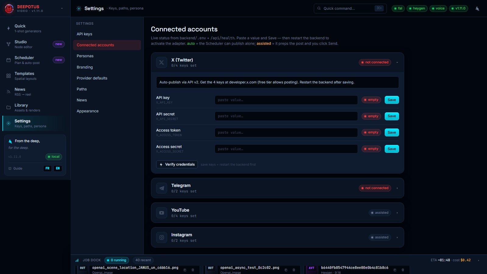
Connected accounts: real status per channel — auto (publishes alone) or assisted (you click Send).
@BotFather → /newbot → copy the token.Create your 4 keys at developer.x.com (writes available pay-per-use) and paste them. Verify credentials button. YouTube and Instagram stay assisted.
Settings → Branding: name, subtitle, taglines, colors and logo apply to the splash, the sidebar and every accent of the app.
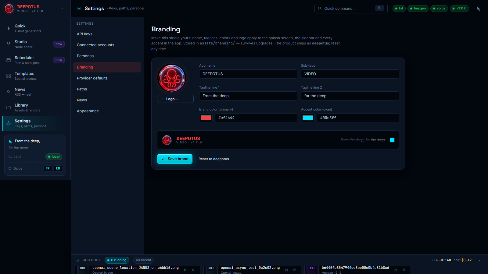
Branding: live wordmark preview. Stored in the data folder — survives updates.
| Symptom | Fix |
|---|---|
down pill top-right | The engine isn't running: relaunch the Desktop icon. |
Red pill on fal/heygen/voice | Missing/invalid key: Settings → API keys, fix, restart. |
| HeyGen avatars are slow to appear (or the list looks empty at first) | Normal on the very first load: HeyGen returns 1,000+ avatars and takes up to ~1 min to respond (their service is slow). The app pre-loads the list at startup and caches it — wait once, then it's instant. If the HeyGen status is green in Settings, your key is fine: it's neither the key, the network, nor the antivirus. |
| A voice gives a "paid plan" error | On the ElevenLabs free plan, only "premade" voices work via the API; custom library/community voices need a paid ElevenLabs plan. Pick a premade voice, or upgrade ElevenLabs. |
| After a restart, keys/library "gone" | No data is lost (it lives in %LOCALAPPDATA%\DeepotusVideoGenData). Relaunch cleanly via the Desktop icon. |
| The plan uses the built-in planner | No Anthropic key nor Ollama model (chapters 11–12). |
CERTIFICATE_VERIFY_FAILED error | Antivirus inspecting HTTPS — handled automatically; otherwise disable HTTPS inspection. |
| "Port 8765 already in use" | The app is already running — open http://127.0.0.1:8765. |
| Where are my files? | Images: …\DeepotusVideoGenData\assets\images · Videos: …\assets\outputs\final · Your uploads: …\assets\outputs\uploads · Sounds: …\assets\audio. |
Two additions to the node editor (Studio).
Drag the Effects / Mask node (Composition section) and wire its output to the new fx port on the Render node. The panel shows a thumbnail grid so you pick an effect at a glance.
Available effects: LUT / Grade (named grades — Teal&Orange, Cyberpunk, Deep-sea, Noir, Vintage…), VHS (sequenceable line displacement, intensity + speed), Colorize (Sepia, Duotone, Matrix, Red-alert…), parametric Gradients (2 colors, angle, opacity, blend) — plus modern classics: grain, vignette, chromatic aberration, glitch, bloom, halation, scanlines/CRT, cinematic letterbox, old film, sharpen, blur, dreamy, pixelate, camera shake, mirror, invert.
Under “Apply to”, choose Whole render (global post-pass) or a specific node (the targeted layer). Add several Effects nodes to stack effects or target different layers.
The Preview button (top bar) produces a free, fast render of the final composition: not-yet-generated Seedance/HeyGen clips are replaced by their source still. You see the framing, layers, overlays and effects exactly as in the final render — before the paid Run.
Everything is stored locally: the app in %LOCALAPPDATA%\DeepotusVideoGen, and your data (generations, calendar + scheduled posts, API keys) in %LOCALAPPDATA%\DeepotusVideoGenData. To continue on another PC (travel) without interrupting the schedule, a kit lives in Desktop\deepotus-migration.
export-migration.ps1 -Dest "E:\deepotus-transfer". Copies the app + all data + a consistent DB snapshot.import-migration.ps1 -Src "E:\deepotus-transfer". Installs everything, rewrites paths if the username differs, recreates the shortcut.Close the app, copy the two folders above to the same %LOCALAPPDATA%\ paths on the other PC, then run scripts\create-desktop-shortcut.ps1 (or double-click scripts\launch-silent.vbs).